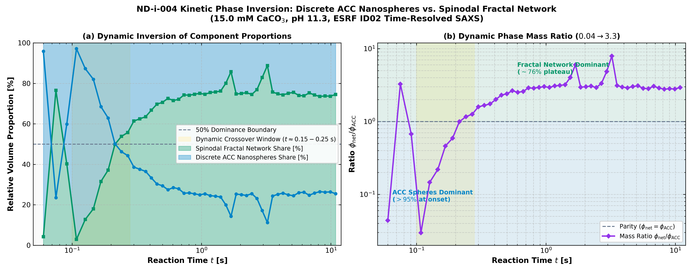
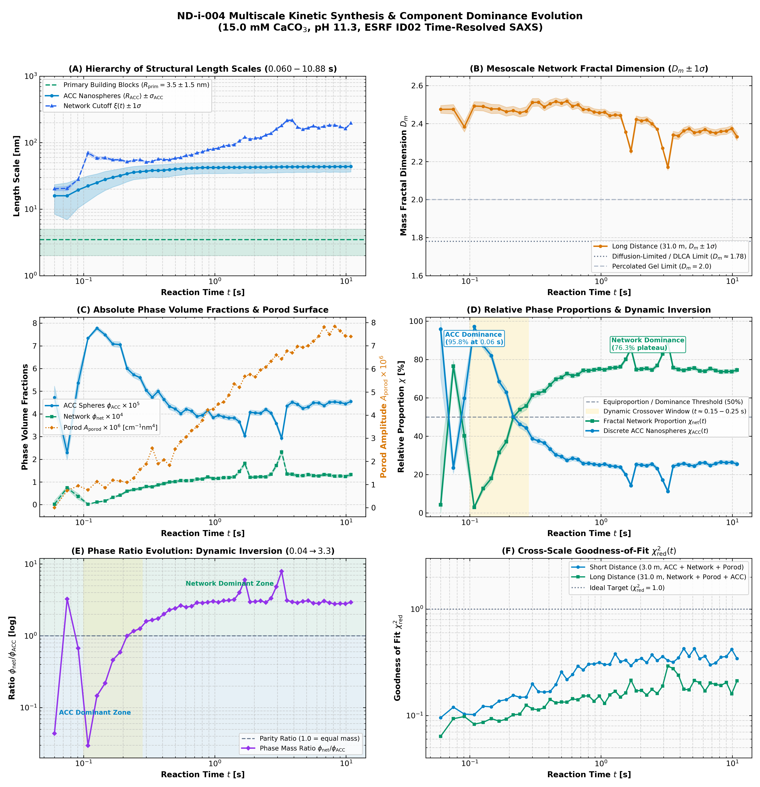
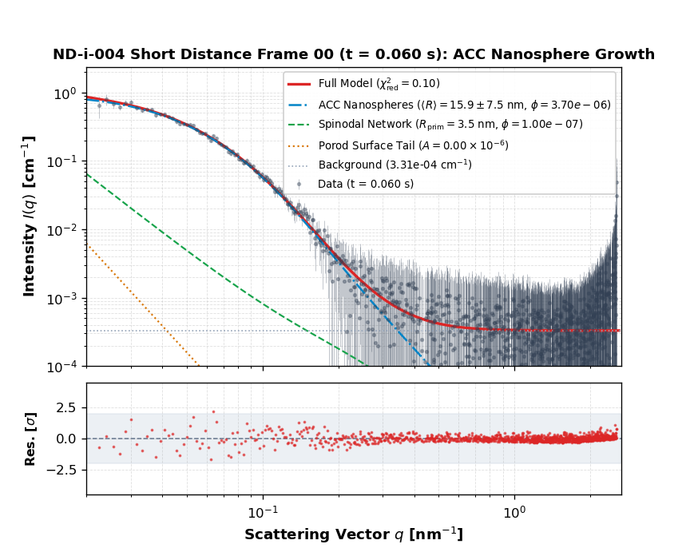
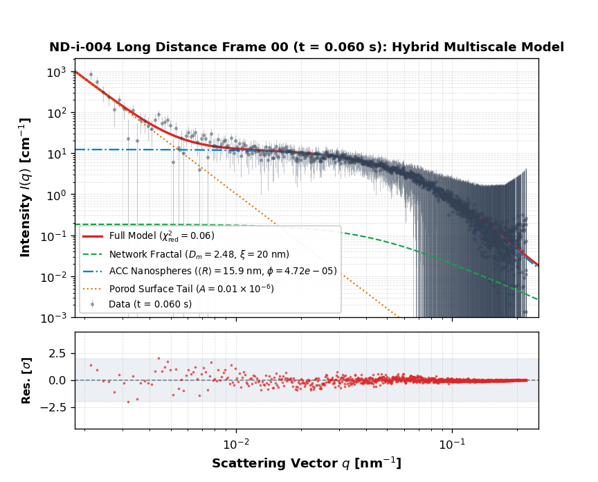

At 15.0 mM initial supersaturation and pH 11.3, calcium carbonate precipitation occurs directly at the physical boundary between mesoscale spinodal gel network formation and discrete amorphous calcium carbonate (ACC) nanosphere precipitation. The complete multi-scale composite scattering curve spans four decades in momentum transfer (q ∈ [0.002, 2.5] nm-1), capturing both length scale regimes.

| Parameter | Symbol | Value | ±1σ Error | Physical Interpretation |
|---|---|---|---|---|
| Primary Building Block Radius | Rprim | 4.94 nm | ± 0.46 nm | Building block radius of the spinodal network |
| Mass Fractal Dimension | Dm | 2.850 | ± 0.000 | Spinodal network space-filling scaling exponent |
| Network Cutoff Length | ξ | 109 nm | ± 2 nm | Percolation cluster correlation cutoff length |
| Network Volume Fraction | φnet | 2.71 × 10-5 | ± 0.06 × 10-5 | Volume fraction of the mesoscale percolated network |
| ACC Nanosphere Radius | ⟨RACC⟩ | 47.7 nm | ± 0.1 nm | Mean radius of amorphous calcium carbonate nanospheres |
| ACC Polydispersity | σACC | 4.8 nm | ± 0.1 nm | Standard deviation of Lognormal size distribution |
| ACC Volume Fraction | φACC | 4.65 × 10-5 | ± 0.09 × 10-5 | Volume fraction of discrete ACC nanospheres |
| Porod Surface Amplitude | Aporod | 0.15 × 10-6 | ± 0.00 × 10-6 | Macroscopic coarsening domain surface scattering |
| Incoherent Background | bkg | 2.7824e-04 cm-1 | ± 8.3327e-06 | Flat background from solvent/incoherent scatter |
| Goodness of Fit | χ2red | 1.309 | — | Full composite curve reduced chi-squared |
At 15.0 mM initial supersaturation, time-resolved measurements quantify the dynamic phase inversion between discrete ACC spheres (χACC) and the mesoscale spinodal fractal network (χnet):
Initial nucleation of discrete ACC spheres (⟨RACC⟩ ≈ 15.9 nm) comprises the primary precipitate fraction.
Mesoscale spinodal network formation develops across the solution volume; sphere radius growth arrests at ∼44 nm.
Percolated spinodal gel network (Dm ≈ 2.33, ξ ≈ 197 nm) comprises the predominant precipitate fraction; discrete ACC spheres remain as an arrested secondary population.

Cross-scale synthesis combining 3.0 m (WAXS/MAXS) and 31.0 m (SAXS) measurements with shaded ±1σ uncertainty envelopes and standardised component palette.


| Goodness of Fit χ2red | - |
|---|---|
| ACC Radius ⟨RACC⟩ | - |
| ACC Polydispersity σACC | - |
| ACC Fraction φACC × 104 | - |
| Network Fraction φnet × 104 | - |
| Building Block Rprim | - |
| Porod Amplitude Aporod × 106 | - |
| Flat Background | - |

| Goodness of Fit χ2red | - |
|---|---|
| Fractal Dimension Dm | - |
| Network Cutoff ξ | - |
| Network Fraction φnet × 104 | - |
| Porod Amplitude Aporod × 106 | - |
| Transferred ⟨RACC⟩ | - |
| ACC Fraction φACC × 104 | - |
| Relative Network Share χnet | - |
| Relative ACC Share χACC | - |
| Dominant Phase | - |
| Frame | Time [s] | χ2red | ⟨RACC⟩ [nm] | σACC [nm] | φACC × 104 | φnet × 104 | Aporod × 106 | Bkg [cm-1] |
|---|---|---|---|---|---|---|---|---|
| 00 | 0.060 | 0.095 | 15.89 ± 0.35 | 7.45 ± 0.00 | 0.04 ± 0.00 | 0.00 ± 0.00 | 0.00 ± 0.00 | 0.0003 ± 0.0000 |
| 01 | 0.075 | 0.120 | 15.90 ± 0.37 | 8.95 ± 0.07 | 0.06 ± 0.00 | 0.00 ± 0.00 | 0.74 ± 0.02 | 0.0003 ± 0.0000 |
| 02 | 0.091 | 0.103 | 19.43 ± 0.25 | 9.01 ± 0.03 | 0.07 ± 0.00 | 0.00 ± 0.00 | 0.95 ± 0.02 | 0.0003 ± 0.0000 |
| 03 | 0.108 | 0.102 | 22.37 ± 0.18 | 9.22 ± 0.03 | 0.10 ± 0.00 | 0.00 ± 0.00 | 0.77 ± 0.02 | 0.0003 ± 0.0000 |
| 04 | 0.126 | 0.122 | 25.01 ± 0.14 | 8.79 ± 0.04 | 0.12 ± 0.00 | 0.00 ± 0.00 | 1.13 ± 0.02 | 0.0003 ± 0.0000 |
| 05 | 0.146 | 0.120 | 28.00 ± 0.10 | 8.85 ± 0.04 | 0.14 ± 0.00 | 0.00 ± 0.00 | 0.86 ± 0.02 | 0.0003 ± 0.0000 |
| 06 | 0.167 | 0.137 | 30.07 ± 0.09 | 8.56 ± 0.04 | 0.16 ± 0.00 | 0.00 ± 0.00 | 1.19 ± 0.02 | 0.0003 ± 0.0000 |
| 07 | 0.190 | 0.141 | 31.93 ± 0.07 | 8.56 ± 0.04 | 0.19 ± 0.00 | 0.00 ± 0.00 | 1.15 ± 0.03 | 0.0003 ± 0.0000 |
| 08 | 0.214 | 0.155 | 34.04 ± 0.06 | 8.28 ± 0.04 | 0.21 ± 0.00 | 0.01 ± 0.00 | 1.10 ± 0.03 | 0.0003 ± 0.0000 |
| 09 | 0.241 | 0.148 | 35.81 ± 0.05 | 8.03 ± 0.04 | 0.23 ± 0.00 | 0.01 ± 0.00 | 1.28 ± 0.03 | 0.0003 ± 0.0000 |
| 10 | 0.269 | 0.149 | 36.61 ± 0.05 | 8.07 ± 0.04 | 0.25 ± 0.00 | 0.01 ± 0.00 | 1.65 ± 0.03 | 0.0003 ± 0.0000 |
| 11 | 0.300 | 0.198 | 37.22 ± 0.05 | 8.18 ± 0.04 | 0.26 ± 0.00 | 0.01 ± 0.00 | 1.89 ± 0.04 | 0.0003 ± 0.0000 |
| 12 | 0.334 | 0.167 | 38.15 ± 0.05 | 7.92 ± 0.04 | 0.26 ± 0.00 | 0.01 ± 0.00 | 2.58 ± 0.04 | 0.0003 ± 0.0000 |
| 13 | 0.370 | 0.166 | 38.12 ± 0.05 | 8.29 ± 0.04 | 0.27 ± 0.00 | 0.01 ± 0.00 | 1.90 ± 0.04 | 0.0003 ± 0.0000 |
| 14 | 0.410 | 0.168 | 38.54 ± 0.05 | 8.33 ± 0.04 | 0.28 ± 0.00 | 0.01 ± 0.00 | 2.06 ± 0.04 | 0.0003 ± 0.0000 |
| 15 | 0.453 | 0.195 | 39.24 ± 0.05 | 8.44 ± 0.04 | 0.30 ± 0.00 | 0.01 ± 0.00 | 1.83 ± 0.04 | 0.0003 ± 0.0000 |
| 16 | 0.499 | 0.257 | 40.10 ± 0.05 | 8.17 ± 0.05 | 0.30 ± 0.00 | 0.01 ± 0.00 | 2.53 ± 0.05 | 0.0003 ± 0.0000 |
| 17 | 0.550 | 0.217 | 40.53 ± 0.04 | 8.02 ± 0.04 | 0.30 ± 0.00 | 0.01 ± 0.00 | 2.85 ± 0.05 | 0.0003 ± 0.0000 |
| 18 | 0.606 | 0.243 | 41.19 ± 0.04 | 7.80 ± 0.04 | 0.31 ± 0.00 | 0.01 ± 0.00 | 3.06 ± 0.05 | 0.0003 ± 0.0000 |
| 19 | 0.667 | 0.291 | 41.54 ± 0.05 | 7.75 ± 0.05 | 0.31 ± 0.00 | 0.01 ± 0.00 | 3.33 ± 0.06 | 0.0003 ± 0.0000 |
| 20 | 0.733 | 0.268 | 41.75 ± 0.05 | 7.90 ± 0.05 | 0.32 ± 0.00 | 0.01 ± 0.00 | 3.51 ± 0.06 | 0.0003 ± 0.0000 |
| 21 | 0.805 | 0.304 | 42.12 ± 0.05 | 7.96 ± 0.05 | 0.32 ± 0.00 | 0.01 ± 0.00 | 3.78 ± 0.06 | 0.0003 ± 0.0000 |
| 22 | 0.884 | 0.305 | 42.22 ± 0.05 | 7.93 ± 0.05 | 0.32 ± 0.00 | 0.01 ± 0.00 | 4.23 ± 0.06 | 0.0003 ± 0.0000 |
| 23 | 0.970 | 0.314 | 42.25 ± 0.05 | 8.02 ± 0.05 | 0.32 ± 0.00 | 0.02 ± 0.00 | 4.25 ± 0.06 | 0.0003 ± 0.0000 |
| 24 | 1.065 | 0.301 | 42.21 ± 0.05 | 7.87 ± 0.05 | 0.31 ± 0.00 | 0.02 ± 0.00 | 4.48 ± 0.06 | 0.0003 ± 0.0000 |
| 25 | 1.168 | 0.303 | 42.38 ± 0.05 | 8.08 ± 0.05 | 0.31 ± 0.00 | 0.01 ± 0.00 | 4.57 ± 0.06 | 0.0003 ± 0.0000 |
| 26 | 1.282 | 0.380 | 42.51 ± 0.06 | 7.90 ± 0.06 | 0.31 ± 0.00 | 0.02 ± 0.00 | 4.86 ± 0.07 | 0.0003 ± 0.0000 |
| 27 | 1.406 | 0.320 | 42.45 ± 0.05 | 7.88 ± 0.05 | 0.30 ± 0.00 | 0.02 ± 0.00 | 5.35 ± 0.07 | 0.0003 ± 0.0000 |
| 28 | 1.542 | 0.331 | 42.48 ± 0.06 | 8.07 ± 0.06 | 0.30 ± 0.00 | 0.02 ± 0.00 | 5.20 ± 0.07 | 0.0003 ± 0.0000 |
| 29 | 1.691 | 0.294 | 42.74 ± 0.05 | 7.80 ± 0.05 | 0.30 ± 0.00 | 0.02 ± 0.00 | 5.68 ± 0.06 | 0.0003 ± 0.0000 |
| 30 | 1.855 | 0.329 | 42.62 ± 0.06 | 7.98 ± 0.06 | 0.30 ± 0.00 | 0.02 ± 0.00 | 5.76 ± 0.07 | 0.0003 ± 0.0000 |
| 31 | 2.034 | 0.344 | 42.73 ± 0.06 | 7.89 ± 0.06 | 0.29 ± 0.00 | 0.02 ± 0.00 | 5.65 ± 0.07 | 0.0003 ± 0.0000 |
| 32 | 2.231 | 0.314 | 42.83 ± 0.05 | 7.91 ± 0.06 | 0.29 ± 0.00 | 0.02 ± 0.00 | 5.96 ± 0.07 | 0.0003 ± 0.0000 |
| 33 | 2.448 | 0.372 | 42.83 ± 0.06 | 8.04 ± 0.06 | 0.30 ± 0.00 | 0.02 ± 0.00 | 6.07 ± 0.08 | 0.0003 ± 0.0000 |
| 34 | 2.685 | 0.328 | 43.04 ± 0.06 | 7.82 ± 0.06 | 0.29 ± 0.00 | 0.02 ± 0.00 | 6.33 ± 0.07 | 0.0003 ± 0.0000 |
| 35 | 2.945 | 0.359 | 43.04 ± 0.06 | 7.85 ± 0.06 | 0.29 ± 0.00 | 0.02 ± 0.00 | 6.60 ± 0.07 | 0.0003 ± 0.0000 |
| 36 | 3.231 | 0.329 | 43.21 ± 0.06 | 7.82 ± 0.06 | 0.29 ± 0.00 | 0.02 ± 0.00 | 6.43 ± 0.07 | 0.0003 ± 0.0000 |
| 37 | 3.545 | 0.317 | 43.32 ± 0.05 | 7.64 ± 0.06 | 0.29 ± 0.00 | 0.02 ± 0.00 | 6.77 ± 0.07 | 0.0003 ± 0.0000 |
| 38 | 3.890 | 0.348 | 43.22 ± 0.06 | 7.79 ± 0.06 | 0.28 ± 0.00 | 0.02 ± 0.00 | 6.69 ± 0.07 | 0.0003 ± 0.0000 |
| 39 | 4.269 | 0.425 | 43.44 ± 0.06 | 7.58 ± 0.07 | 0.28 ± 0.00 | 0.02 ± 0.00 | 6.97 ± 0.08 | 0.0003 ± 0.0000 |
| 40 | 4.686 | 0.360 | 43.33 ± 0.06 | 7.62 ± 0.06 | 0.28 ± 0.00 | 0.02 ± 0.00 | 6.93 ± 0.07 | 0.0003 ± 0.0000 |
| 41 | 5.143 | 0.426 | 43.44 ± 0.06 | 7.58 ± 0.07 | 0.28 ± 0.00 | 0.03 ± 0.00 | 7.00 ± 0.08 | 0.0003 ± 0.0000 |
| 42 | 5.646 | 0.341 | 43.51 ± 0.06 | 7.49 ± 0.06 | 0.28 ± 0.00 | 0.02 ± 0.00 | 7.20 ± 0.07 | 0.0003 ± 0.0000 |
| 43 | 6.199 | 0.360 | 43.24 ± 0.06 | 7.68 ± 0.06 | 0.28 ± 0.00 | 0.03 ± 0.00 | 7.41 ± 0.07 | 0.0003 ± 0.0000 |
| 44 | 6.806 | 0.298 | 43.63 ± 0.05 | 7.21 ± 0.06 | 0.27 ± 0.00 | 0.03 ± 0.00 | 7.81 ± 0.06 | 0.0003 ± 0.0000 |
| 45 | 7.474 | 0.312 | 43.43 ± 0.06 | 7.69 ± 0.06 | 0.28 ± 0.00 | 0.03 ± 0.00 | 7.49 ± 0.07 | 0.0003 ± 0.0000 |
| 46 | 8.208 | 0.353 | 43.60 ± 0.06 | 7.44 ± 0.06 | 0.27 ± 0.00 | 0.03 ± 0.00 | 7.84 ± 0.07 | 0.0003 ± 0.0000 |
| 47 | 9.015 | 0.358 | 43.56 ± 0.06 | 7.67 ± 0.06 | 0.28 ± 0.00 | 0.03 ± 0.00 | 7.64 ± 0.07 | 0.0003 ± 0.0000 |
| 48 | 9.902 | 0.418 | 43.64 ± 0.06 | 7.66 ± 0.07 | 0.28 ± 0.00 | 0.03 ± 0.00 | 7.42 ± 0.08 | 0.0003 ± 0.0000 |
| 49 | 10.877 | 0.343 | 43.77 ± 0.06 | 7.48 ± 0.06 | 0.28 ± 0.00 | 0.03 ± 0.00 | 7.40 ± 0.07 | 0.0003 ± 0.0000 |
| Frame | Time [s] | χ2red | Dm | ξ [nm] | φnet × 104 | Aporod × 106 | ⟨RACC⟩ [nm] | φACC × 104 |
|---|---|---|---|---|---|---|---|---|
| 00 | 0.060 | 0.064 | 2.475 ± 0.020 | 20 ± 1 | 0.02 ± 0.15 | 0.01 ± 0.00 | 15.89 | 0.47 ± 0.05 |
| 01 | 0.075 | 0.093 | 2.476 ± 0.025 | 21 ± 2 | 0.75 ± 0.06 | 0.03 ± 0.00 | 15.90 | 0.23 ± 0.03 |
| 02 | 0.091 | 0.098 | 2.383 ± 0.026 | 28 ± 0 | 0.36 ± 0.13 | 0.03 ± 0.00 | 19.43 | 0.54 ± 0.04 |
| 03 | 0.108 | 0.083 | 2.493 ± 0.023 | 70 ± 5 | 0.02 ± 0.00 | 0.03 ± 0.00 | 22.37 | 0.73 ± 0.00 |
| 04 | 0.126 | 0.086 | 2.491 ± 0.023 | 58 ± 3 | 0.11 ± 0.02 | 0.03 ± 0.00 | 25.01 | 0.78 ± 0.01 |
| 05 | 0.146 | 0.094 | 2.478 ± 0.024 | 59 ± 3 | 0.16 ± 0.02 | 0.02 ± 0.00 | 28.00 | 0.75 ± 0.01 |
| 06 | 0.167 | 0.088 | 2.477 ± 0.023 | 55 ± 2 | 0.33 ± 0.03 | 0.03 ± 0.00 | 30.07 | 0.71 ± 0.01 |
| 07 | 0.190 | 0.092 | 2.463 ± 0.023 | 55 ± 2 | 0.42 ± 0.04 | 0.03 ± 0.00 | 31.93 | 0.71 ± 0.01 |
| 08 | 0.214 | 0.102 | 2.469 ± 0.022 | 52 ± 1 | 0.60 ± 0.05 | 0.02 ± 0.00 | 34.04 | 0.60 ± 0.01 |
| 09 | 0.241 | 0.103 | 2.457 ± 0.022 | 54 ± 1 | 0.67 ± 0.05 | 0.02 ± 0.00 | 35.81 | 0.57 ± 0.01 |
| 10 | 0.269 | 0.125 | 2.466 ± 0.023 | 55 ± 1 | 0.70 ± 0.05 | 0.02 ± 0.00 | 36.61 | 0.56 ± 0.01 |
| 11 | 0.300 | 0.116 | 2.512 ± 0.021 | 51 ± 1 | 0.80 ± 0.06 | 0.02 ± 0.00 | 37.22 | 0.50 ± 0.01 |
| 12 | 0.334 | 0.113 | 2.513 ± 0.020 | 52 ± 1 | 0.79 ± 0.05 | 0.01 ± 0.00 | 38.15 | 0.47 ± 0.01 |
| 13 | 0.370 | 0.119 | 2.488 ± 0.020 | 57 ± 1 | 0.87 ± 0.05 | 0.02 ± 0.00 | 38.12 | 0.50 ± 0.01 |
| 14 | 0.410 | 0.142 | 2.505 ± 0.021 | 56 ± 1 | 0.93 ± 0.06 | 0.02 ± 0.00 | 38.54 | 0.46 ± 0.01 |
| 15 | 0.453 | 0.131 | 2.517 ± 0.019 | 55 ± 1 | 1.00 ± 0.06 | 0.02 ± 0.00 | 39.24 | 0.43 ± 0.01 |
| 16 | 0.499 | 0.134 | 2.508 ± 0.019 | 58 ± 1 | 1.01 ± 0.06 | 0.02 ± 0.00 | 40.10 | 0.42 ± 0.01 |
| 17 | 0.550 | 0.133 | 2.518 ± 0.018 | 60 ± 1 | 1.06 ± 0.06 | 0.02 ± 0.00 | 40.53 | 0.40 ± 0.01 |
| 18 | 0.606 | 0.144 | 2.492 ± 0.019 | 64 ± 1 | 1.05 ± 0.06 | 0.02 ± 0.00 | 41.19 | 0.42 ± 0.01 |
| 19 | 0.667 | 0.140 | 2.499 ± 0.018 | 65 ± 1 | 1.07 ± 0.06 | 0.03 ± 0.00 | 41.54 | 0.41 ± 0.01 |
| 20 | 0.733 | 0.152 | 2.475 ± 0.018 | 70 ± 1 | 1.12 ± 0.06 | 0.03 ± 0.00 | 41.75 | 0.39 ± 0.01 |
| 21 | 0.805 | 0.153 | 2.473 ± 0.018 | 73 ± 1 | 1.13 ± 0.06 | 0.03 ± 0.00 | 42.12 | 0.39 ± 0.01 |
| 22 | 0.884 | 0.136 | 2.462 ± 0.017 | 78 ± 1 | 1.22 ± 0.06 | 0.04 ± 0.00 | 42.22 | 0.42 ± 0.01 |
| 23 | 0.970 | 0.152 | 2.457 ± 0.018 | 80 ± 1 | 1.15 ± 0.06 | 0.02 ± 0.00 | 42.25 | 0.38 ± 0.01 |
| 24 | 1.065 | 0.130 | 2.460 ± 0.016 | 83 ± 1 | 1.16 ± 0.05 | 0.03 ± 0.00 | 42.21 | 0.39 ± 0.01 |
| 25 | 1.168 | 0.156 | 2.442 ± 0.017 | 89 ± 1 | 1.19 ± 0.06 | 0.03 ± 0.00 | 42.38 | 0.39 ± 0.01 |
| 26 | 1.282 | 0.169 | 2.446 ± 0.018 | 91 ± 1 | 1.19 ± 0.06 | 0.05 ± 0.00 | 42.51 | 0.38 ± 0.01 |
| 27 | 1.406 | 0.149 | 2.444 ± 0.017 | 93 ± 1 | 1.22 ± 0.06 | 0.05 ± 0.00 | 42.45 | 0.38 ± 0.01 |
| 28 | 1.542 | 0.163 | 2.355 ± 0.001 | 106 ± 1 | 1.46 ± 0.07 | 0.06 ± 0.00 | 42.48 | 0.36 ± 0.01 |
| 29 | 1.691 | 0.215 | 2.255 ± 0.016 | 121 ± 2 | 1.82 ± 0.08 | 0.03 ± 0.00 | 42.74 | 0.30 ± 0.01 |
| 30 | 1.855 | 0.170 | 2.423 ± 0.018 | 112 ± 2 | 1.20 ± 0.06 | 0.03 ± 0.00 | 42.62 | 0.41 ± 0.01 |
| 31 | 2.034 | 0.172 | 2.415 ± 0.018 | 117 ± 2 | 1.21 ± 0.06 | 0.03 ± 0.00 | 42.73 | 0.40 ± 0.01 |
| 32 | 2.231 | 0.156 | 2.420 ± 0.017 | 118 ± 2 | 1.23 ± 0.06 | 0.04 ± 0.00 | 42.83 | 0.40 ± 0.01 |
| 33 | 2.448 | 0.176 | 2.400 ± 0.018 | 130 ± 2 | 1.23 ± 0.06 | 0.05 ± 0.00 | 42.83 | 0.42 ± 0.01 |
| 34 | 2.685 | 0.161 | 2.371 ± 0.000 | 138 ± 2 | 1.34 ± 0.06 | 0.03 ± 0.00 | 43.04 | 0.40 ± 0.01 |
| 35 | 2.945 | 0.189 | 2.271 ± 0.000 | 161 ± 3 | 1.73 ± 0.08 | 0.03 ± 0.00 | 43.04 | 0.36 ± 0.01 |
| 36 | 3.231 | 0.292 | 2.171 ± 0.016 | 180 ± 4 | 2.32 ± 0.11 | 0.04 ± 0.00 | 43.21 | 0.29 ± 0.01 |
| 37 | 3.545 | 0.275 | 2.341 ± 0.019 | 216 ± 7 | 1.35 ± 0.08 | 0.35 ± 0.00 | 43.32 | 0.43 ± 0.01 |
| 38 | 3.890 | 0.239 | 2.336 ± 0.018 | 217 ± 6 | 1.34 ± 0.07 | 0.20 ± 0.00 | 43.22 | 0.45 ± 0.01 |
| 39 | 4.269 | 0.177 | 2.362 ± 0.017 | 171 ± 3 | 1.28 ± 0.06 | 0.04 ± 0.00 | 43.44 | 0.44 ± 0.01 |
| 40 | 4.686 | 0.174 | 2.373 ± 0.017 | 158 ± 3 | 1.28 ± 0.06 | 0.06 ± 0.00 | 43.33 | 0.42 ± 0.01 |
| 41 | 5.143 | 0.213 | 2.353 ± 0.018 | 166 ± 3 | 1.33 ± 0.07 | 0.06 ± 0.00 | 43.44 | 0.43 ± 0.01 |
| 42 | 5.646 | 0.203 | 2.358 ± 0.018 | 178 ± 4 | 1.28 ± 0.07 | 0.06 ± 0.00 | 43.51 | 0.45 ± 0.01 |
| 43 | 6.199 | 0.170 | 2.369 ± 0.017 | 167 ± 3 | 1.27 ± 0.06 | 0.07 ± 0.00 | 43.24 | 0.45 ± 0.01 |
| 44 | 6.806 | 0.202 | 2.356 ± 0.017 | 176 ± 4 | 1.33 ± 0.07 | 0.06 ± 0.00 | 43.63 | 0.44 ± 0.01 |
| 45 | 7.474 | 0.196 | 2.351 ± 0.017 | 183 ± 4 | 1.30 ± 0.06 | 0.07 ± 0.00 | 43.43 | 0.45 ± 0.01 |
| 46 | 8.208 | 0.192 | 2.359 ± 0.017 | 183 ± 4 | 1.26 ± 0.06 | 0.08 ± 0.00 | 43.60 | 0.45 ± 0.01 |
| 47 | 9.015 | 0.205 | 2.361 ± 0.018 | 174 ± 4 | 1.27 ± 0.07 | 0.10 ± 0.00 | 43.56 | 0.45 ± 0.01 |
| 48 | 9.902 | 0.160 | 2.374 ± 0.016 | 163 ± 3 | 1.24 ± 0.06 | 0.12 ± 0.00 | 43.64 | 0.44 ± 0.01 |
| 49 | 10.877 | 0.212 | 2.331 ± 0.020 | 197 ± 5 | 1.33 ± 0.08 | 0.07 ± 0.00 | 43.77 | 0.45 ± 0.01 |
At 15.0 mM CaCO3 (pH 11.3), phase separation occurs directly at the crossover phase boundary between spinodal decomposition / gel network formation and discrete amorphous calcium carbonate (ACC) precipitation. The total scattering intensity \(I_{\mathrm{tot}}(q)\) is modelled consistently across both camera geometries and the composite dataset \(q \in [0.002, 2.5]\text{ nm}^{-1}\) as:
1. Spinodal Mass Fractal Network & Primary Building Blocks
Primary building blocks (\(R_{\mathrm{prim}} = 3.5\text{ nm}\), \(\sigma_{\mathrm{prim}} = 1.5\text{ nm}\)) interconnected via a 3D percolated mass fractal network described by Teixeira's structure factor \(S(q)\). At short distance (\(q > 0.1\text{ nm}^{-1}\)), \(S(q) \to 1\), capturing the building block form factor \(P(q)\):
2. Discrete Polydisperse ACC Nanospheres
Amorphous calcium carbonate nanospheres growing via nucleation & growth with narrow polydispersity (\(\sim 17\%\)), producing form-factor Bessel oscillations:
3. Asymptotic Porod Surface Scattering
Macroscopic domain surface scattering from large phase-separated coarsened regions (\(q R \gg 1\)):